goodalexander
goodalexanderIs CoreWeave Going to Die
No. Coreweave I do not think is going to die.

TLDR: no. Coreweave I do not think is going to die. I think Anthropic roadshow will do better than expects due to Fable 5.5 lifting sentiment on Lab funding, with possibility of government intervention to ensure OpenAI can raise de-risking American ai investment in the near term. I believe we are getting this price action due to a positioning washout not a fundamental breakdown in CRWV business model which will be highlighted on the next earnings call on November 10. I am still long $ORCL despite the near term pain.
now the longer article
Coreweave stock (CRWV) dropped 15.5% yesterday and is down another 4% or so today after Anthropic released disappointing Q3 revenue. This move is important because CRWV is the poster child of the leveraged AI datacenter build out. Yesterday Larry Fink (the CEO of Blackrock) said halted data center expansion could send the US into a recession. This article aims to help a reader understand
- the context and what drove this move in the first place
- the specific unit economics of CoreWeave's business
- the various scenario map of what happens next (including my take on Anthropic ARR)
I am not long CRWV though I am likely going to buy the bonds. I own Oracle stock $ORCL , which tanked 9% yesterday. I strongly disagree with Citrini's post here, which was posted as Anthropic ARR missed street expectations (Q3 not accelerating so $100B ARR which was the annual bogey is hard to hit). I do not think it's over. I think RSI is close and ppl are panicans but before we get into that, we will first aim to be Sober. If not Situationally Aware
What is This Thing and How Did We Get Here
CoreWeave is in the business of borrowing money to install Nvidia GPUs for customers such as OpenAI, Microsoft and Meta in data centers. Typically this borrowing has two parts: a special purpose vehicle (SPV) for the customer that references the customer's credit rating. And Coreweave parent borrowing.
CoreWeave needs the cash up front to actually buy the GPUs, get the power leases and install them in data centers. So the faster CoreWeave grows, the more money it needs to raise - and it doesn't really break even until year 3 or 4 (math on this later).
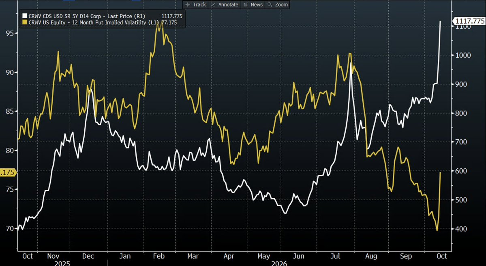
Coreweave has quite a lot of debt. The equity is $36 billion. Net debt is $31b or $47b including $16b of data center leases (which we do later in valuation table for enterprise value) . You can see in the chart below that 2030-2032 are big debt maturities ($10b a year).
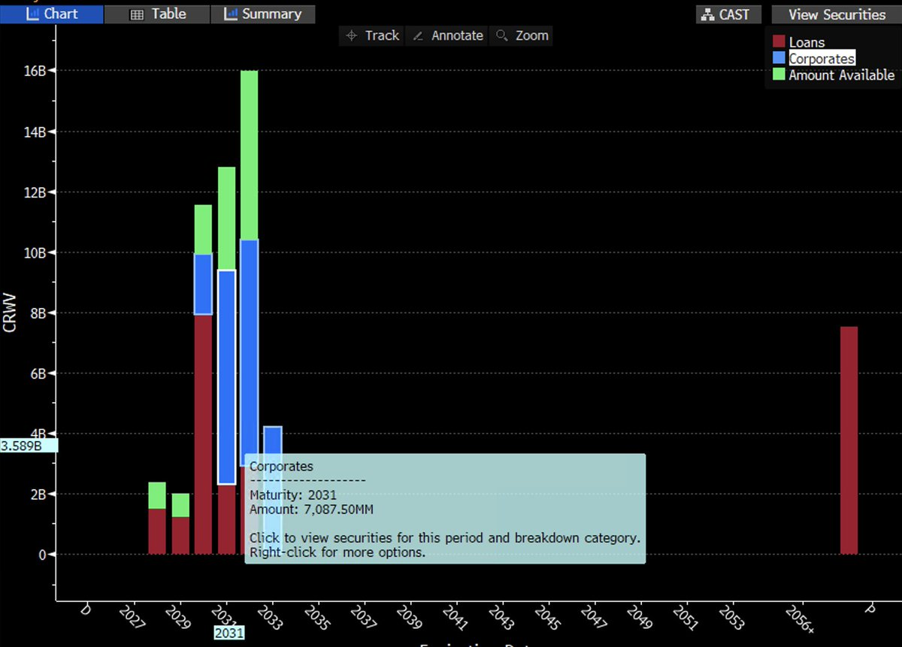
The oversimplified meme that people are focusing on is that Coreweave borrows at 15.6%. Their trailing numbers indicate a 10% IRR so 10% is less than 15.6% so it must be over. This math is wrong bc most of the borrowing on deals is from deal specific SPVs or chip backed loans not the parent (blended cost of all debt at market prices is 9.6 & contract loans are 6-9.5% but we will get into that later). We'll stick w the panic first. Here you can see yields CRWV 9 3/4 Bonds due October 2031 .
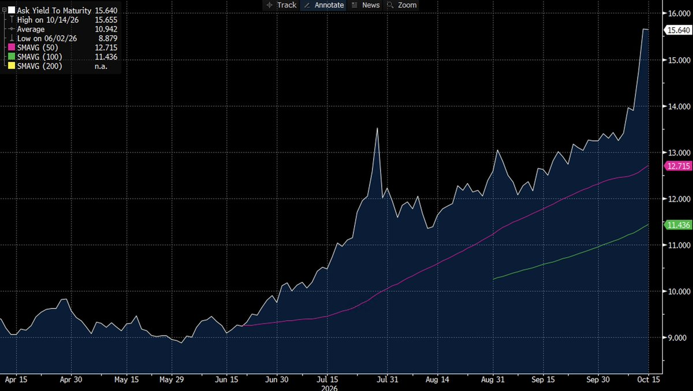
We are also seeing a brutal unwind of the "Leopold trade". Memory stocks, CRWV and NBUS which had leveraged Korean participants as well as Situational Awareness v2 are unwinding vs traditional consulting plays which historically were viewed as "disrupted by AI". So part of what we are seeing is not deteriorating fundamentals, but rather retail and leveraged players blowing up.
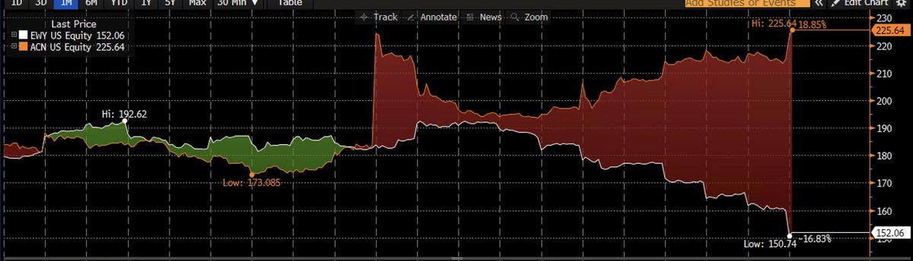
But on the CRWV specific micro, the basic timeline of what happened that caused the credit (which is clearly not retail) to blow out is
First - Management "beat" earnings pretty aggressively last quarter and accelerated their revenue backlog a lot. If everything was fine in the world, this would be a good thing. And at first the stock went up
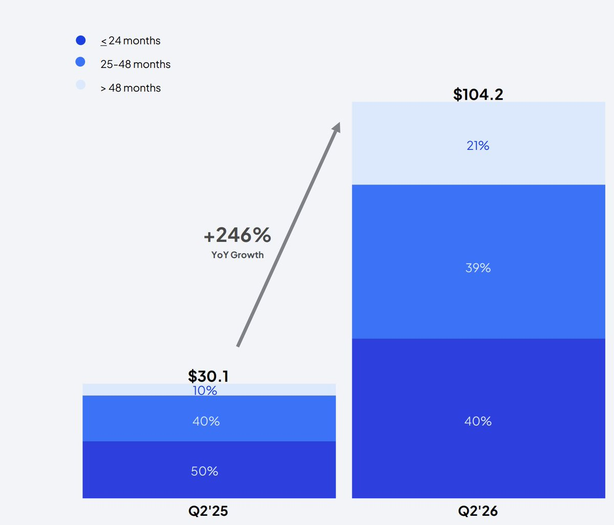
You can see the paradox somewhat clearly if you look at 2027 EPS expectations for Coreweave. The faster Coreweave grows, the worse near term earnings look. Management has said that they could be "immensely cashflow positive if they stopped capex today" but unfortunately, a lot of the commitments have been made so they can't really stop
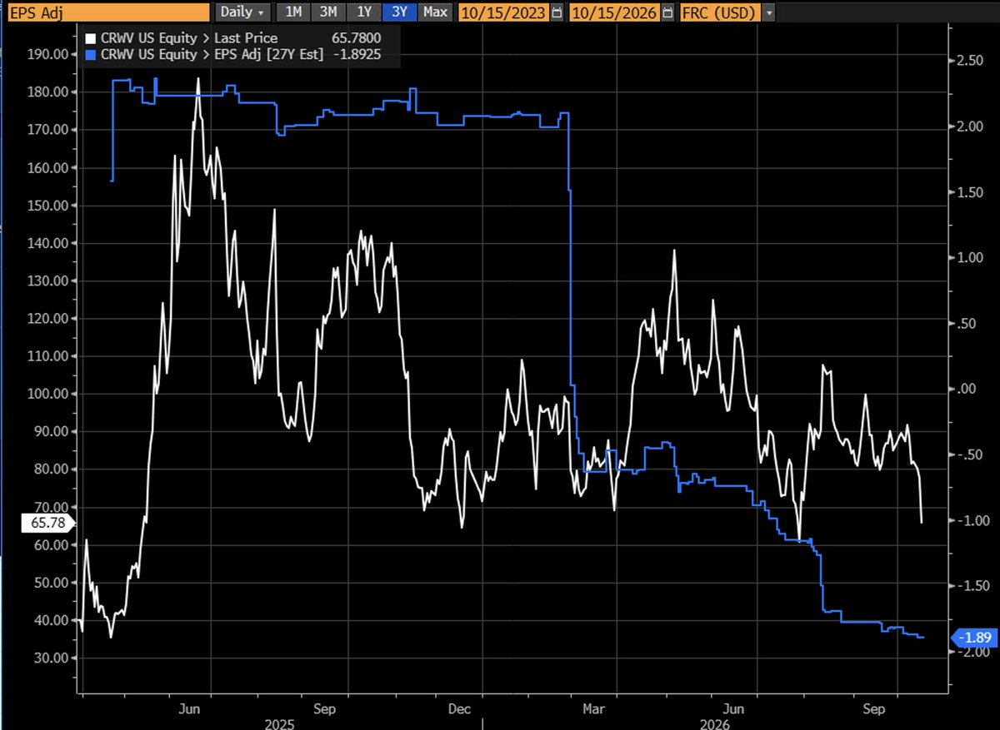
Next - the War in Iran got substantially worse. When Coreweave printed WTI Crude was below $85. Now it is $98. The 5 year US bond yield went from 4.4% to 4.9% as the Fed decided to start getting hawkish to combat resulting increases in inflation expectation. As I'm writing this, 5y yields are moving lower quickly (wicked to 5.1% 2 days ago and now around 4.89%).
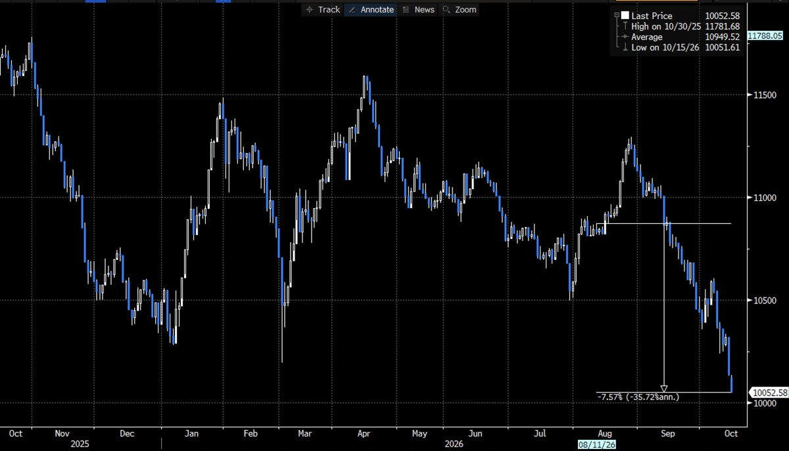
These moves are problematic for three reasons. More expensive debt makes the economics of AI ROI harder.
First. If Coreweave has to borrow more to build, everything gets more expensive.
Second. The other input is power prices. Which go up, once again raising ROI requirements. And having the knock on effect of making data center build outs very unpopular going into midterms. The pitch is "AI is going to take your job, but first you won't be able to afford your electricity bill" which is objectively a terrible pitch.
Third. Saudi Arabia and the UAE, are the likely the funding for OpenAI's mega round at $1.4T rumored valuation. Softbank has been reaching out to them fund raising for another $100b to double down on OpenAI. Saudi is under a lot of pressure due to the Iran backed Houthis attacking and killing lots of people.
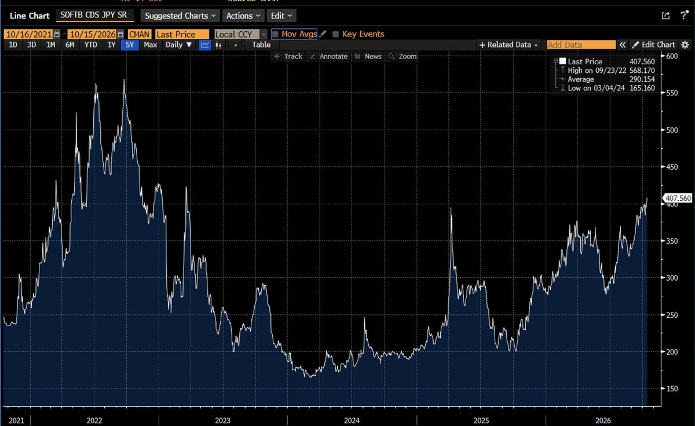
OpenAI is important because
- It delayed its IPO so there are concerns it won't have the cash to pay for commitments. this is also why ORCL is getting smoked
- It's a giant Coreweave Tenant
- Softbank is leveraged long OpenAI
So perceived distress in the labs was the backdrop for this masterpiece of foolishness in the Financial Times where CRWV execs pointed to supposedly unlimited insurance capital that might arrive Soon (TM), which given market conditions was read as "you're not getting the money elsewhere". The article also highlighted 'circular financing' which is important to understand
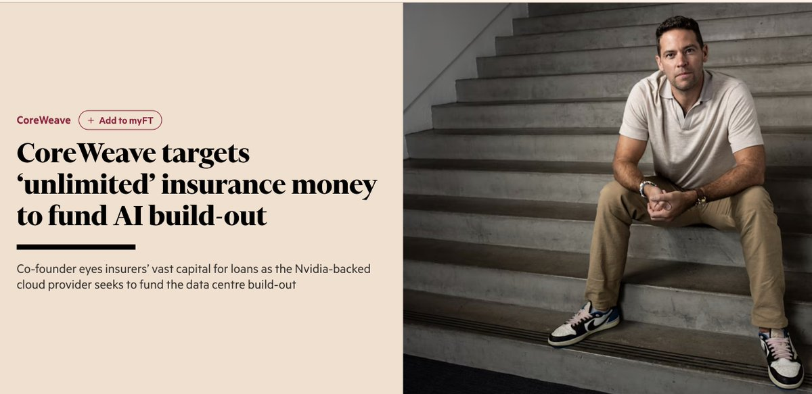
McBee said CoreWeave “deeply appreciated” Nvidia’s support, which has included more than $2bn of investment, a $6.3bn agreement to buy its unused computing capacity and anchoring its IPO. Huang’s personal foundation had separately donated $108mn of computing time bought from CoreWeave as of May. But he rejected claims of circular financing, saying Nvidia had provided only a few billion dollars of the tens of billions CoreWeave had raised.
Nvidia owns about 10% of Coreweave. It's already promised to backstop demand. It has the cashflow to easily solve Coreweave's credit problems. One quarter of Nvidia buyback ($20b) would cover about 2.5 quarters of what CRWV needs-- but people are worried that this is all a giant ponzi scheme (circular financing) so it's unlikely that Nvidia steps up their existing commitment.
Deep breaths.
It's important to take a step back in all the FUD and understand why management decided to ramp growth to begin with. Since the release of Kimi K3 there has been a massive surge in inference demand and Nvidia chips
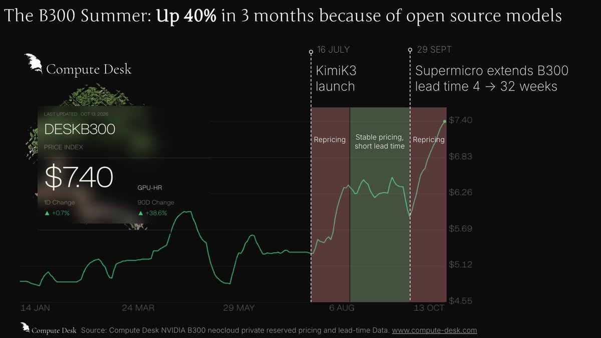
One of the big fears with Coreweave and neoclouds more broadly is chip depreciation. Inference demand is so high, and supply is so tight that you read tech twitter showing that chip supply is basically equivalent to social status in the valley. And legacy chips have been holding their value
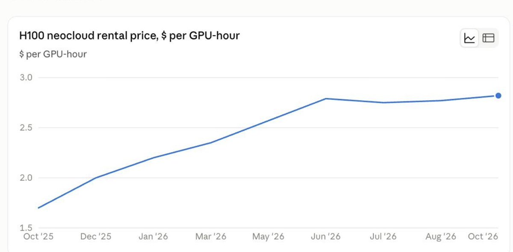
RTX 5090s originally retailed for $2,000 in January 2025 and you can see here are trading from anywhere from $8-12k per chip.
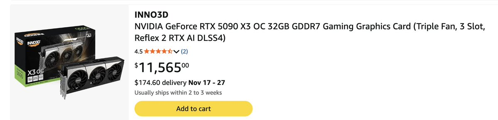
From management commentary, the GAAP assumed depreciation of chips is 6 years but V100 chips are still in use about 9 years after release, showing how well chips have held their value.
The backdrop of exploding prices for legacy chips increased Coreweave's confidence on the depreciation side. Remember: one of the big risks of CRWV is that it's caught holding the bag on a bunch of obsolete chips.
So on a trailing basis this is clearly not the case. And demand for Vera Rubin - Nvidia's new generation of chips vastly improved margin expectations for new installs
In September - management said that they see 5-10 points higher contribution margin bump and 25% price increases + $40M per MW a year for 3-6 months deal due to Vera Rubin. These margin improvements are not CRWV specific and are seen across the industry
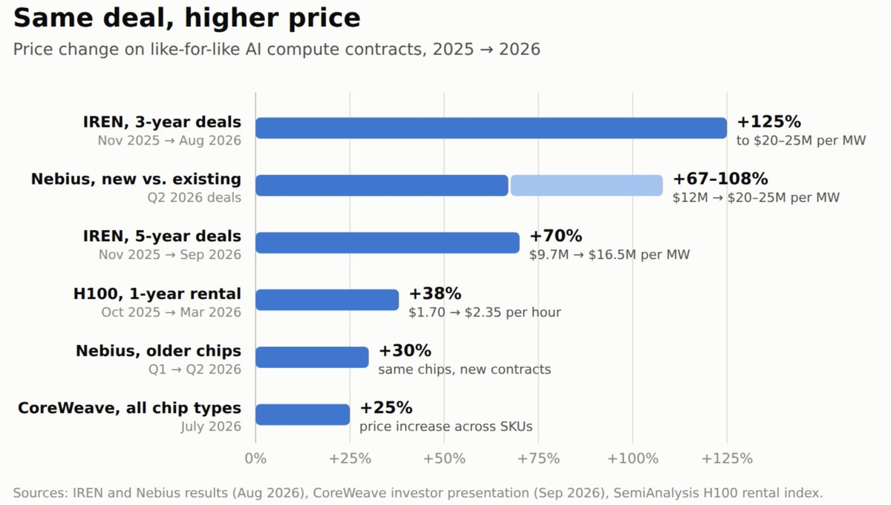
The flip side, is - as you've seen me saying to short Cerebras (CBRS) -- rapidly accelerating asic chip development from Google (TPU), Amazon (Trainium) Nvidia, and even OpenAI (with Broadcom) poses a major depreciation risk to existing chips on a go forward basis.
Addressing the Gartner Fud and the Macro of AI
Gartner put out an article saying that AI can't possibly generate enough revenue to justify the massive Capex which is in the media designated as responsible for the CRWV credit puke
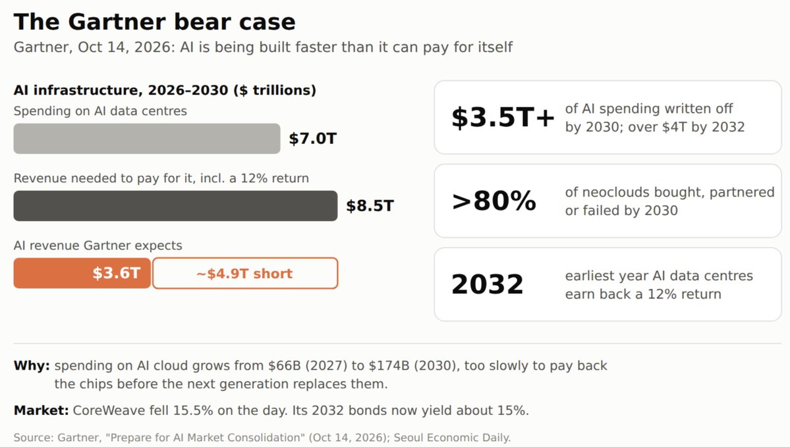
So basically Gartner is predicting a $5 trillion revenue short fall because it doesn't see a high enough ROI on AI. I think this is extremely misguided. If Gartner understood AI well enough to forecast it, its stock probably wouldn't be down 37% over 5 years.
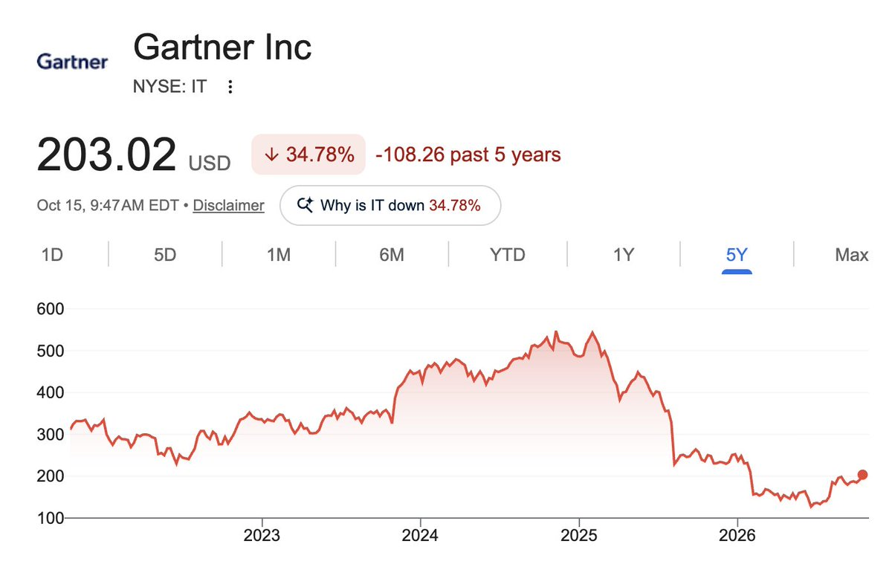
US office jobs are about $5.7T of wages per year and $8T counting benefits. If you see trends in computer use, Muse, the ability of agents to make financial models - the concept of AI replacing 10% of this is not at all absurd. So call it $800B a year of value just on the 'disruption to white collar work', already above Gartner, just in the US, not accounting for productivity acceleration from doing work better and faster.
Then on top of that Gartner's math is just outright wrong on neolabs. Gartner sees all neoclouds combined at $53b a year by 2030 whereas CRWV alone will exit 2027 at >$30b a year, with long term backlog $104b plus $25b signed in early Q3. Gartner said "chips will get replaced before they pay back" whereas most recent CRWV quarter says exact opposite. ""We recently signed an A100 contract that extends into 2029 at an attractive price … this SKU was introduced in 2020." - Agrawal, CFO
On the Micro, BoFA said yesterday its 130 AI projects return 2-3x their cost over time - with Mythos deployment more than doubling anticipated savings by next year to $700m. AI is basically a tiny % of Opex at the bank. So even frontier customers are still very early in what is likely a land and expand contract base -- and the models are the worst they will ever be
Palantir is beating and raising every quarter bc people are getting excellent ROI on AI spend with open source models on prem. So it's not just closed source that has demand. US commercial billings +153% - and net dollar retention is 157%. Most recently put up largest ever full year revenue guide. This could basically never happen if the C suite was unable to see value on its token spend.
The thing people are probably missing is that there's no real indication that inference is the 'terminal state' for AI. The most immediate catalyst being RSI - or recursive self improvement.
In Sep 2026 openAI put up a post called Research Acceleration: the view inside OpenAI . It posts a series of charts that basically argues that AI improving AI is now one of the largest, explosive demands for compute
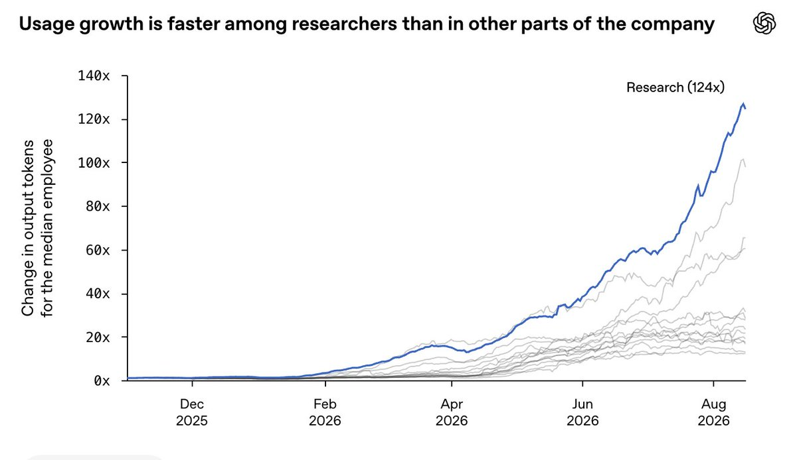
Other labs are echoing this. Anthropic's Jack Clark indicated that RSI was possible in 2027 whereas before he thought it was 2028, to which Elon replied
Sergei Brin and the Google team are saying the same thing
RSI basically has the possibility to move the frontier on science and math itself which is a lot bigger deal than inference demand. And it results in an effective "AI takeoff" which basically is totally non linear and at odds with pod bros jamming an excel spreadsheet w incremental QoQ revenue
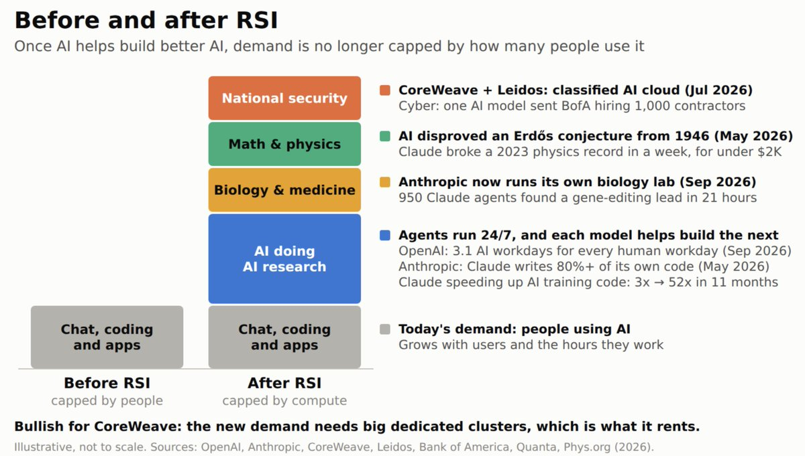
Even Accenture - the canonical firm "disrupted by AI" is seeing its revenue acceleration almost entirely to legacy businesses finally pulling the trigger on "AI transformation". So - my take is that the PvP zero sum narrative is at odds with basically everything thats actually happening at the labs in the real world.
Unit Economics of Corweave
Yesterday after the implosion, management sent out emails saying that its fundamentals were very strong without really saying why - which in my opinion made things worse. Boomers flash back to Lehman management reassuring the market weeks before it all ended. Millennials to FTX Caroline flexing on the timeline days before the rug. The honest truth is that mgmt has done a shitty job managing expectations of investors, and they might be checked out/not care bc they sold $1b+ of equity which would be the bear case. But looking at the numbers, I tend to agree that economics are really good.
Due to heavy demand and price increases -- the IRR on a 5 year deal is nearly double what trailing deals did
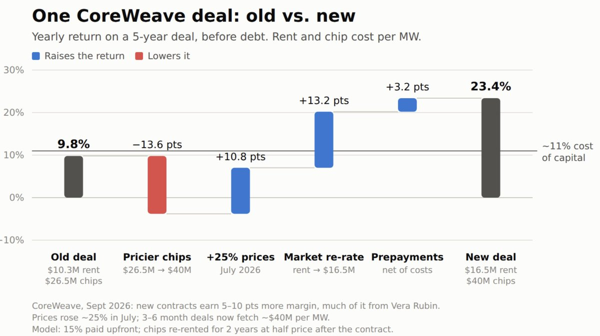
Visualizing a standard 5 year deal in terms of its primary economic inputs. Basically the cash flow on day 1 consists of a pre-payment, a bank loan and CoreWeave putting up capital. Then 3.5 years later you're at break even on a cash flow basis. 5 years later the loan is paid off and chips get re-rented.
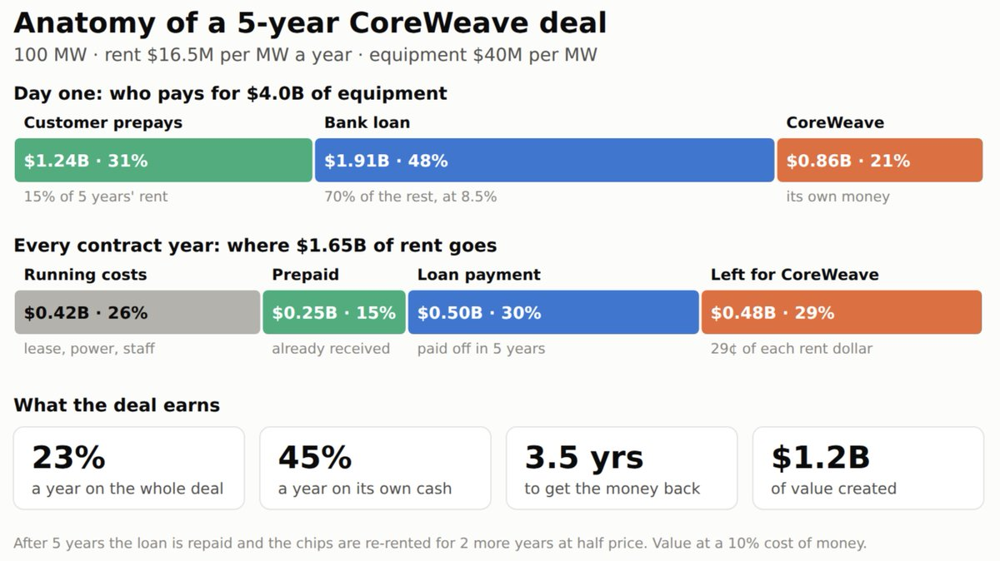
The chart below shows the most important economic assumptions.
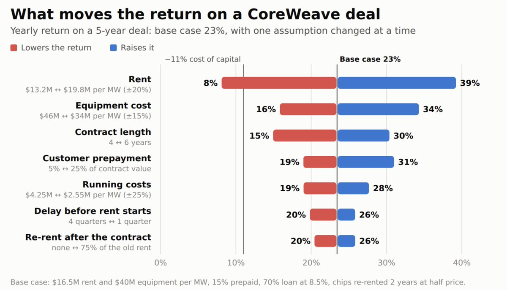
My comments on each of the top 3 categories category
Rent is an ROI question and I think that is okay. Rent per Megawatt (MW) is the most important assumption. On Vera Rubin Nvidia says it has up to 5x the inference performance of blackwell and up to 10x more output per megawatt (though when adjusting for costs it's more like 2-3x). So paying up for rent still has a good ROI on your actual usage.
GPT 6 Astra solved 2/68 open Erdos problems while every other model scored zero and has been actually breaking physics benchmarks. Opus 5.5 is the best model I've ever used. Coreweave told the FT that '2027 is efffectively sold out' and the company is signing 2028 deals. Nebius and IREN are sold out in 2026 with prices +70-125% in a year.
I have 3 core takes on demand:
- The models went from slop to 'tasteful' in the Opus 5.5 release so there's been an inflection that wasn't in Anthropics' Q3 (came out at end of Sept)
- If Fable 5.5 is Opus 5.5 on math/physics steroids, demand acceleration should be substantial. Historically Opus was quite a weak model compared to Fable,
- There is evidence of RSI across all the major labs (already discussed).
Equipment Cost: The way to think about this is that CRWV needs the ROI of chips to go up faster than equipment costs. A 15% spike in price can take deal ROI from 23% to 16%. New Nvidia racks (GB300) go for $5m for 72 chips + network and storage is $40m per megawatt vs $29m for previous generation and $26.5m for CRWV's current fleet. Each new generation costs more per megawatt but produces vastly more output - driving the demand for rent.
Simplistically - Vera Rubin does 3.5-5x computing power of GB300 and consumes 1.5x electricity so output per MW goes 2-3x, allowing rents to keep up with a 25% price hike.
Contract Length
There are a couple components here. First - 3-6 month deals go out at $40M per MW a yearper MW vs $16.5 for a new 5 year deal. DDTL 5.5 loans - which started in August 2026 allowed for funding of these short term deals. Intrator said at Goldman conference "for the first time, lenders are taking the renewal risk"
I think this is important to understand. DDTL 5.5 stands for "Delayed Draw Term Loan". DDTL's are backed by chips and customer contracts, not just CRWV credit. The 5.5 update is that the loan now runs longer than the contracts underneath, so lenders share the risk of the chips not being able to be re rented. They do this bc with a multi year history, GPUs have become financeable -- with public rental prices, futures contracts and a track record of old chips re-renting at strong prices. So CRWV took a ton of risk in 2023, borrowing at 13.5%+ and that's dropped a lot to ~8-9% today.
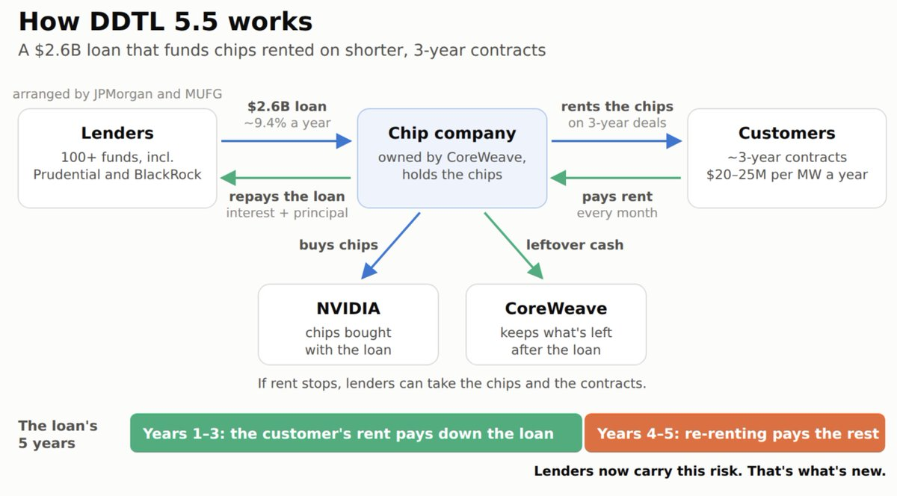
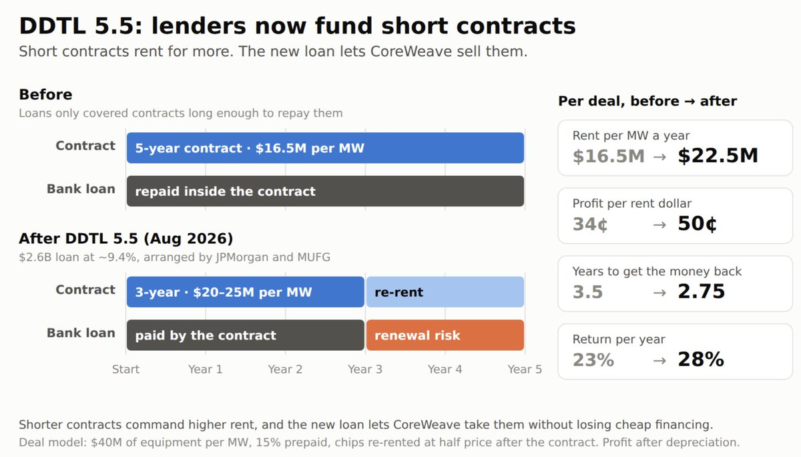
H200 3 year renewals are coming in at a premium to the original contracts which shows that fears about renewal risk are probably overblown.
At the same time, 21% of backlog is now contracted 4 years out up from 10% a year earlier, showing that companies are increasingly convinced on the long term ROI of AI investments.
So the overall picture here is that market structure of AI lending is improving and getting more sophisticated, reducing capital risk for CRWV structurally. Goldman and JP. Morgan are exploring compute futures to hedge AI loans, and MS is pointing to GPU price indices as 'critical hedging instruments'. Once lenders can price and hedge what GPUs will earn in year 4 then they'll be even more capable of entering DDL 5.5 loans which will in turn lower CRWV's structural credit risk
The next element is reliance on AI labs as customers. Specifically the Labs.
The Elephants in the Dining Room
Unlike SpaceX which has the musk meme stock premium and a heavily retail centric holderbase, Anthropic is a more 'sophisticated' story that appeals to multi manager TMT investors. The fate of Anthropic IPO likely determines the narrative around OpenAI's IPO - both of which determine CRWV's credit risk on a go forward.
OpenAI is up to 21% of backlog. All non IG labs and AI companies together are sub 30%.
Anthropic kicks off its roadshow Nov 9, and likely prices before the 26th. In mid November we'll have CRWV results. And whether or not OpenAI closes its bridge round is not determined
The reason why ppl were initially sad about last night's numbers: Q3 revenue was sequentially +45% which is a huge deceleration from 140% QoQ. That means the $100b per year run rate target looks 20$B too high. And to make matters worse Anthropic didn't give a full year outlook so the $110b "from attendees" wasn't actually guided. Meanwhile Anthropic has been cutting prices on small models and there's growing chinese competition. And then, there's additional revenue that gets cut from distillation (5-7%) which Anthropic is cutting off.
Interestingly, Variational perps on Anthropic are barely changed day on day. And SK Telecom (early investor in anthropic and a stub play) is outperforming the Kospi Day on day, with both Zoom and Salesforce up substantially day on day (both have Anthropic equity exposure). Opus 5.5 - which in my opinion, is the best model Anthropic has ever released only had 9 days in Q3 -- which I think is part of the weakness.
Anthropic further indicated that Q3 was cash flow positive with an 85% adjusted gross margin which should temper some of the inference margin fears.
So a launch of Fable 5.5 could substantially accelerate numbers. Which would be classic, and effective sandbagging so that the IPO roadshow seems insane off 'low expectations'. Then you have RSI narrative on top of that as a kicker, with national security, bio-advancement, and math as a t+12 month story for 'why do I own this at $2T'. With Spacex trading fine I do think the market will be able to absorb this.
Re: OpenAI - the $50b revenue run rate was lower than investor expectations. With the question being whether or not it's going to be able to raise $30b at $1.4 trillion. To a large extent that is going to be determined by Anthropic's roadshow and how the orderbook looks assuming OpenAI keeps releasing good models. The number of Codex downloads is decelerating QoQ, but this is in part due to a much much larger base and is still between +43-92% QoQ
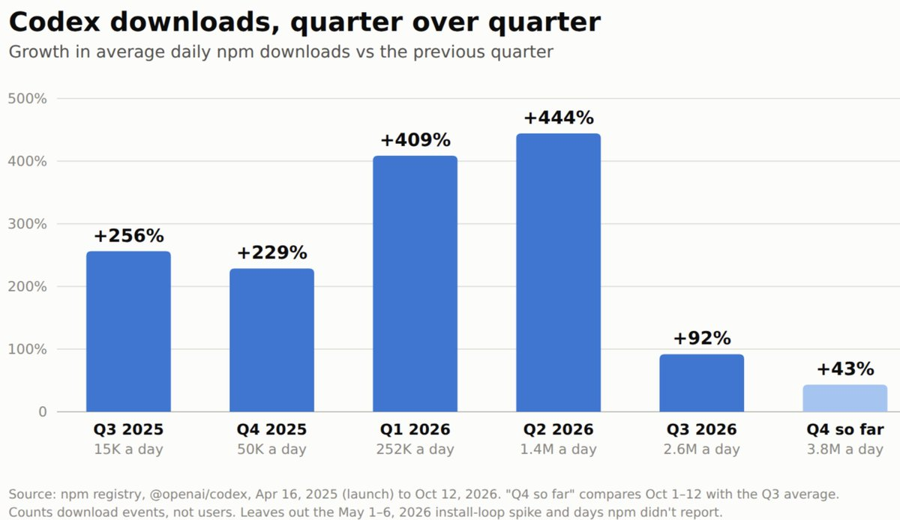
If this further decelerates or goes ex growth QoQ without a new model launch, I'd be concerned but for now -- I think AI is still the main story in the economy, there's an acceleration in its capability due to recursive self improvement, and the growth in new revenue verticals (healthcare, consumer transaction revenue ala muse, advertising, national security & weaponry) will paint a story of a mix shift away from more competitive inference business to higher margin and dollar value, stickier revenue.
Street Commentary
BoFa and Nomura are defending CRWV despite the imploding price which is better than the alternative. None of the banks get paid if the AI bubble bursts. There are strong incentives to keep the show going into the Anthropic and eventual OpenAI IPOs. Part of why I don't really read into Street commentary and presumably why the stock is still down 5%+ pre market despite the reaffirmations
I *do not think it hurts* that Wall St has perverse incentives to pump the stock though
The Trump Administration Could Intervene
Trump's accounts bought CRWV bonds the week before a Department of Energy announcement that CRWV is a partner in its "Genesis Mission", which pumped the stock 20% in a day (lmao). And started bidding in June 2026
So he (or his in house Presidential hedge fund) are ramped on the name. Don Jr's 1789 capital runs a $1.2B real estate fund that includes data centers and owns a stake in Crusoe (same biz as CRWV)
Trump's commentary has included repeated insistence that the frontier should 'not be paced' or slowed down (bullish CRWV).
The most relevant catalyst would be the government taking a stake in OpenAI which would de-risk Coreweave's customer credit. Trump has specifically stated that he's open to doing this. And OpenAI tried to get the government to take a 5% stake in July. Trump told time on Oct 1 "I might. Maybe I could do that"
When you see a large acceleration in RSI in the labs, along with physics and math development - I'd say that's a very strong argument that AI is a public policy and national security concern. Which Trump has already said repeatedly. But that's a lot more true today than it was last year. Such that subscribing to OpenAI's next round isn't crazy. At the same time, we know it would be extremely unpopular politically - so it would most likely happen after Midterms (Nov 3) pre earnings.
Valuation / Where This Thing Can Trade/ Where it is Now
The stock is currently trading at $63. per CNBC - Leopold was buying calls between $81 and $106. The typical target price on the street is $137.35
Management has stated that current billings de-risk the company or covers the debt which is technically true but that only covers the debt not the equity holders. So the equity is a bet on management being able to be able to follow through on its statement which is that "it has excellent visibility into at least 8 GW into 2030" vs 1.5 GW in June bc the equity holders get paid after the debt is covered.
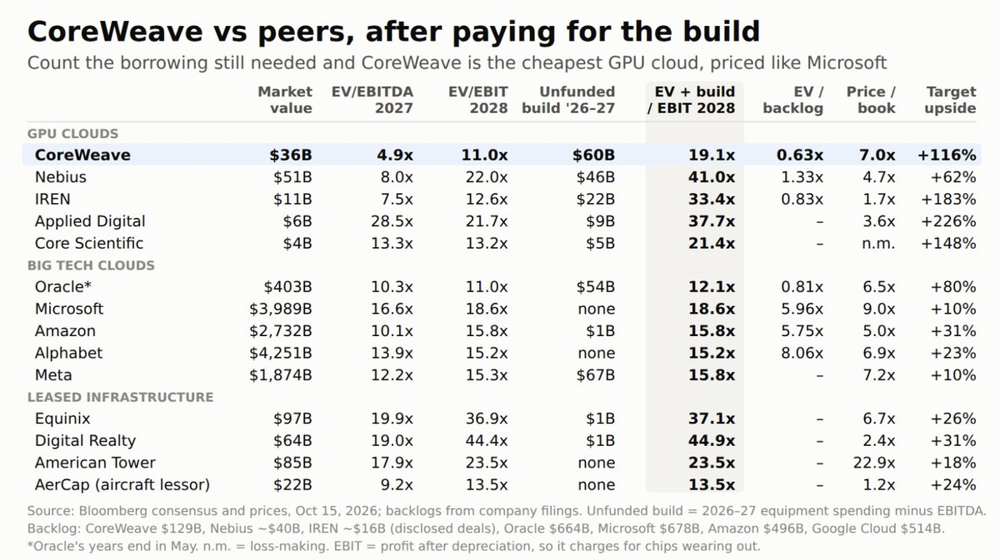
The market is not particularly optimistic about equity holders getting paid. Coreweave trades at a substantial discount to peers and doesn't get credit for its backlog. It's about 116% away from its target price - showing that analysts have largely been caught offsides by this move.
2028 is an eternity for a stock realizing 15% daily moves so the obvious near term concern is a dilutive capital raise being required to allay customer concerns that the company is going to default.
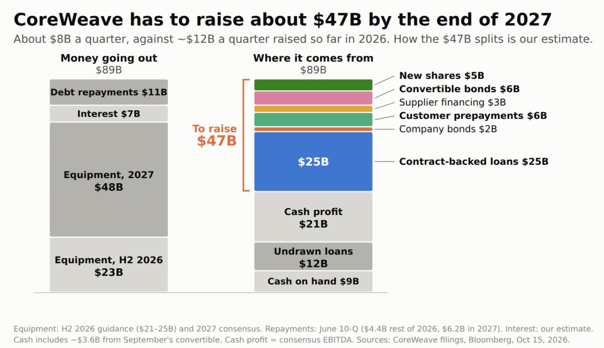
This is realistically about $5b of stocks and $6b of converts. Sep 17 saw issuance of a $4.2 b convert and filed a program to sell up to 35m shares with sales starting roughly now. The $47b to raise through the end of 2027 including scheduled repayments compares to $36b raised so far in 2026 - so if you're buying this stock to 'finance the future' chances are you're getting diluted to do so (hence why I prefer the debt).
Okay but what if it actually dies
There are 2 ways it could go down. Orderly death (seppuku) and disorderly (kamikaze). Some elements of the disorderly situation are already happening (Firmus - pulling its IPO this week - and the CDS surge)
Orderly: the contracts/ loans stay company specific within their own special purpose vehicles. If CRWV fails, the lenders to those companies take the chips and the contracts and continue to operate them. The chips stay rented. Shareholders get zeroed. Debt has partial recovery
Disorderly: Customers stop paying. Lenders seize and sell the GPUs. Landlords lose tenants. These are largely former bitcoin miners. Core Scientific for example leases its 590 MW under $10b of contracts and colo with Coreweave. Coreweave rent is flowing into Core Scientific's 3.3$B of notes, which of course would blow up. Galaxy similarly has CRWV as the only tenant. Applied Digitial. Same story. So that's another $39b. And then, CRWV has another $35.5B of signed leases that haven't kicked off.
So $63b of equipment (hundreds of thousands of GPUs) gets market sold. Resale prices and rental rates go off a cliff. Everything goes perfectly correlated. Neoclouds have $20b of GPU backed debt, which is all valued against the same thing.
This simultaneously nukes Coreweave, Lambda, Crusoe, Nebius, Applied Digital and humiliates Blackstone + Carlyle which is already trading like death - potentially amplifying stress in private credit markets. Nvidia is forced to buy up to $6.3b of unsold capacity while its stock price implodes - which is also the largest weight in the S&P 500 and with data center capex a large % of GDP growth, you probably also get a recession. BoFA already highlighted that this would cause a ripple effect in the construction, staffing and general economy.
Because this has now gotten to the highest levels of govt, with the optics of Trump and Republicans tied directly to AI - Democrats sweep 2028, raise taxes, prosecute everyone involved (Trump/Ellison) and we then have a disorderly melt in the US fiscal situation followed by a depression.
The fact that everyone knows what the disorderly situation looks like, in my view, makes it a lot less likely. AI is too big to fail. The stakes are enormous personally and politically. So I think the big players work together to keep the music playing
More commentary
All commentary
Intel, Sandisk, AWS, Binance. Shake it up. Add some Geopolitics. Why not?
Intel which is now down 29% this morning changed the story from "2027 is funded by operations" to that it's probably funded by debt and equity…

One Last Midnight Opting Out of a Raw Deal: Long Coins Short Stocks
Cryptocurrency is running higher. Stocks are stalling. I think it's time for the big run in coins vs equities and the crypto market now has the infra…

Whiplash. DeepSeek, Inference is Over. SpaceX $1T Guide (We're Back)
Simply - near term after SpaceX and SMCI we see a sigh of relief on GPU economics and then are left with the Fable 5.5 launch to answer the question…